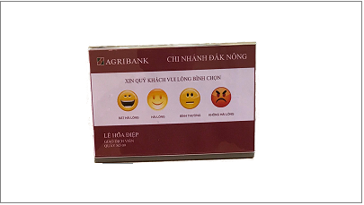

HỆ THỐNG ĐÁNH GIÁ NHÂN VIÊN - HỆ THỐNG BÌNH CHỌN KHÁCH HÀNGHiện nay nhiều tổ chức đã nhân ra rằng chất lượng lượng dịch vụ là yếu tố quan trọng làm thỏa mãn khách hàng qua đó tạo lợi thế so với đối thủ cạnh tranh. Thu thập phản hồi từ khách hàng là một kênh thông tin quan trọng giúp cải thiện đội ngũ nhân viên phục vụ.Công ty Giải Pháp Số Việt – Viet Digital là nhà sản xuất đầu tiên cung cấp hệ thống đánh giá nhân viên trên thị trường.Sản phẩm của Viet Digital đa dạng về cấu hình giúp cho các tổ chức có thể ứng dụng một cách dễ dàng vào thực tế.Hệ thống tích hợp vào hệ thống xếp hàng điện tử :Mỗi quầy giao dịch, giao dịch viên được trang bị thiết bị bình chọn VDS-CFT210, thiết bị này được kết nối với bộ gọi số tại quầy (QMS Teller/QMS Counter). Sau khi giao dịch xong khách hàng sẽ nhấn nút để đánh giá chất lượng giao dịch, . Kết quả đánh giá sẽ được xuất ra đồng thời trong các báo cáo của hệ thống xếp hàng điện tử.
Hệ thống độc lập VDS-CFSys:

THÔNG SỐ KỸ THUẬT THIẾT BỊ BÌNH CHỌN VDS-CFTXXX
|